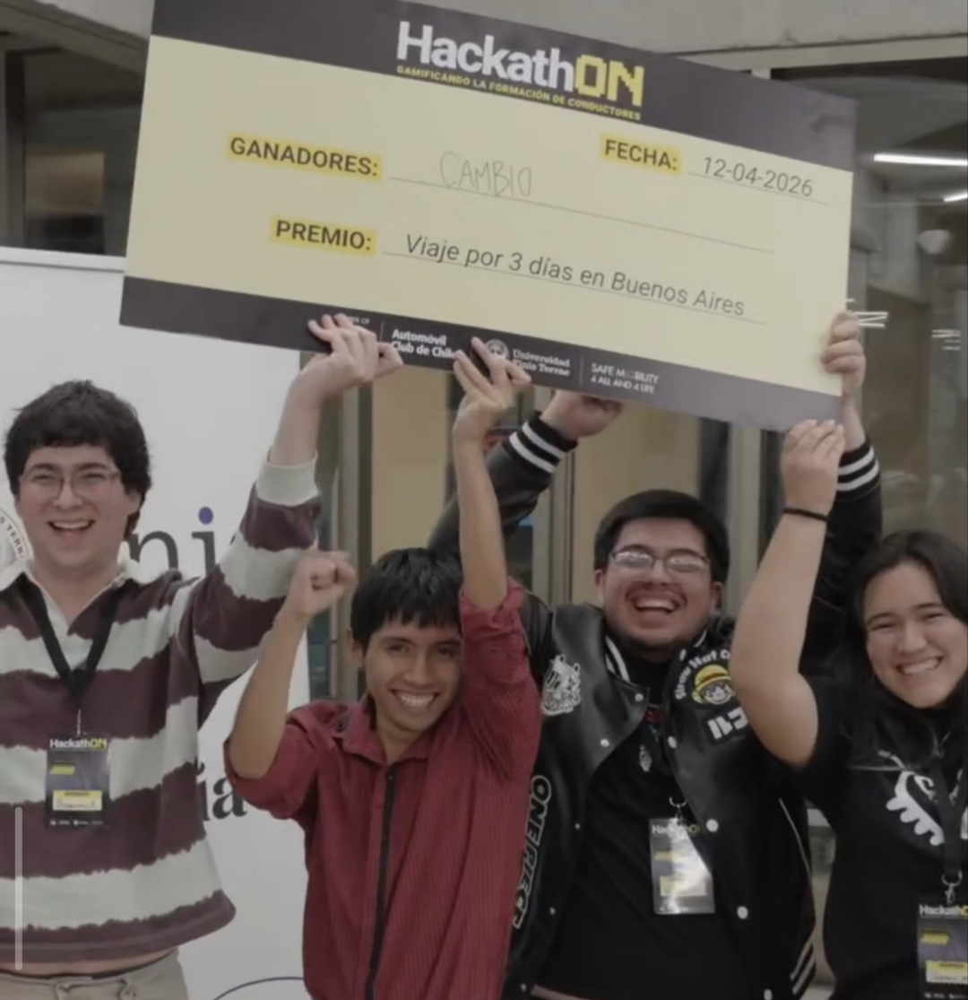
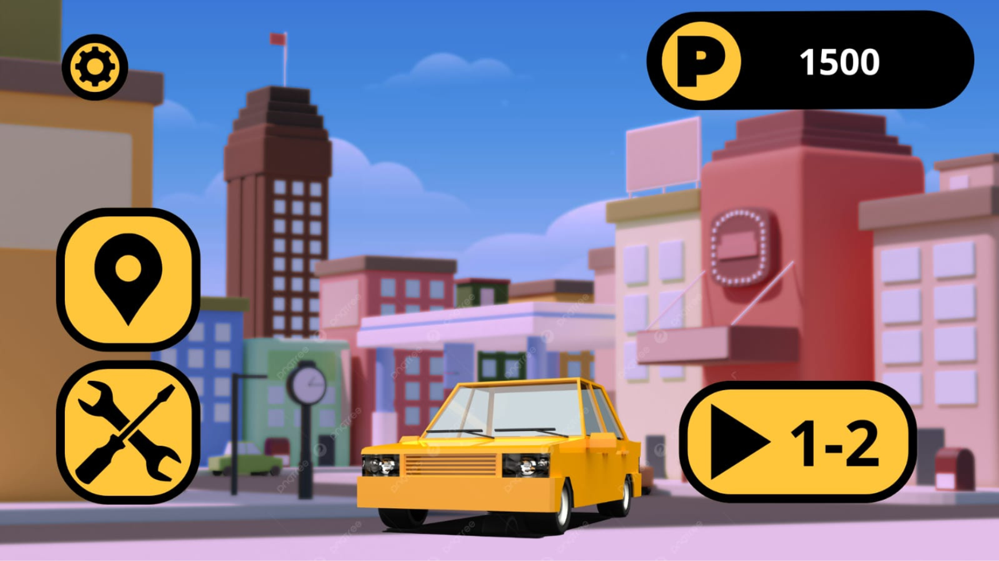
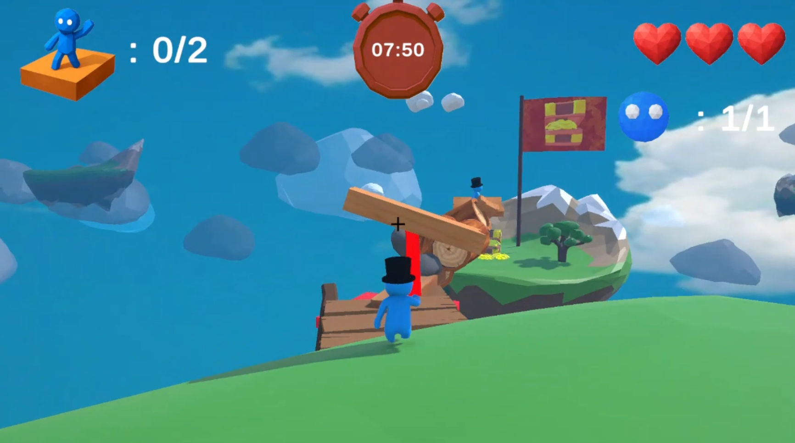
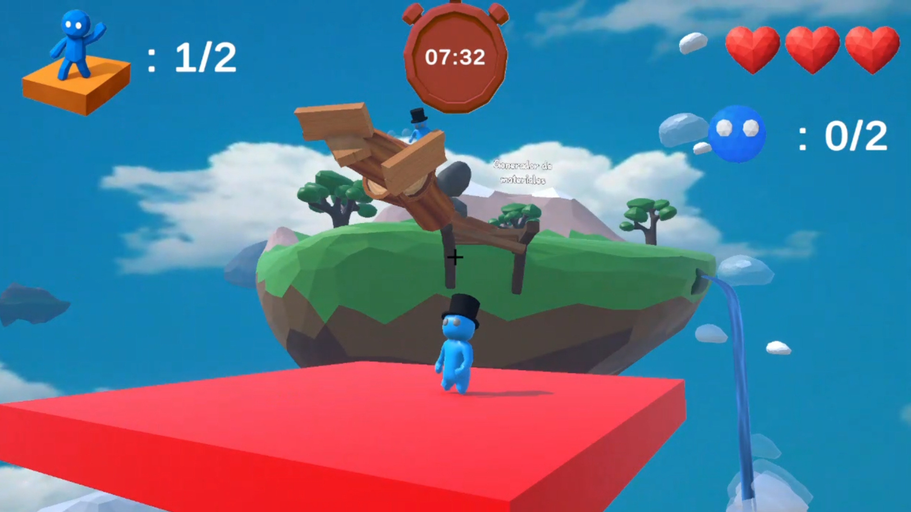
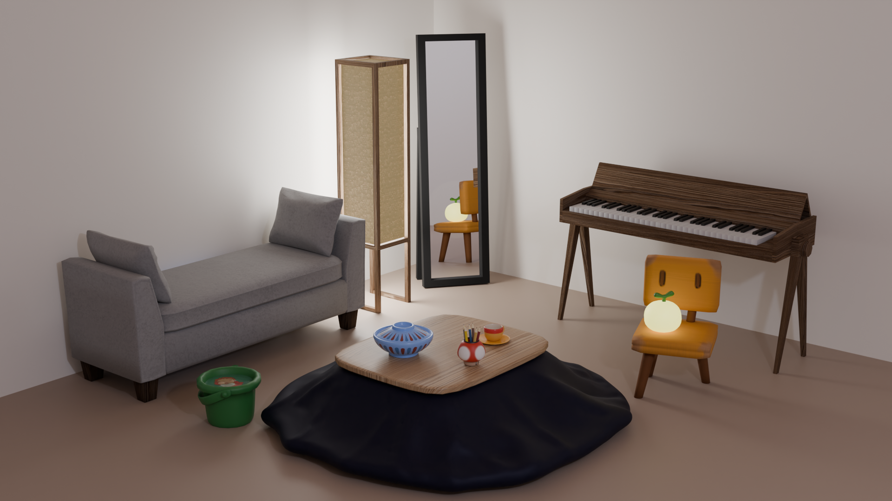
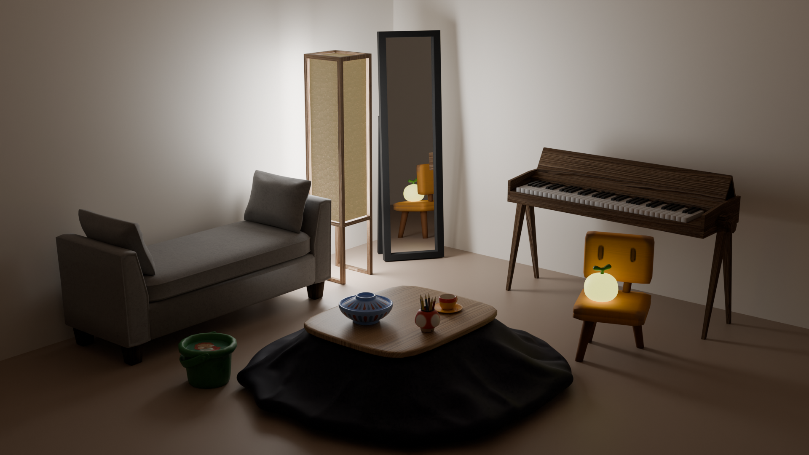
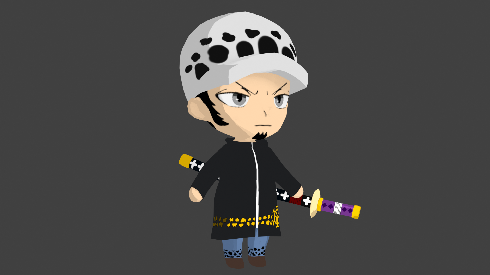

Modelado, animación y escenas 3D






 >
>







Experimentos, prácticas y colaboraciones puntuales
 Prototipo en Unity
Prototipo en Unity
 Goshi como protagonista
Goshi como protagonista
Prototipo móvil estilo "Golpea al topo" protagonizado por Goshi.
UnitySillones de mimbre y mesa de centro — práctica de modelado y composición.
BlenderMano 3D con uñas intercambiables para un emprendimiento de manicure, interactiva en Unity.
Blender · UnityWoman Game Jam — colaboración creando sprites en pixel art para el juego.
Aseprite Logo E-Sport
Logo E-Sport
Diseño de identidad gráfica para un equipo de Esports.
Adobe Illustrator